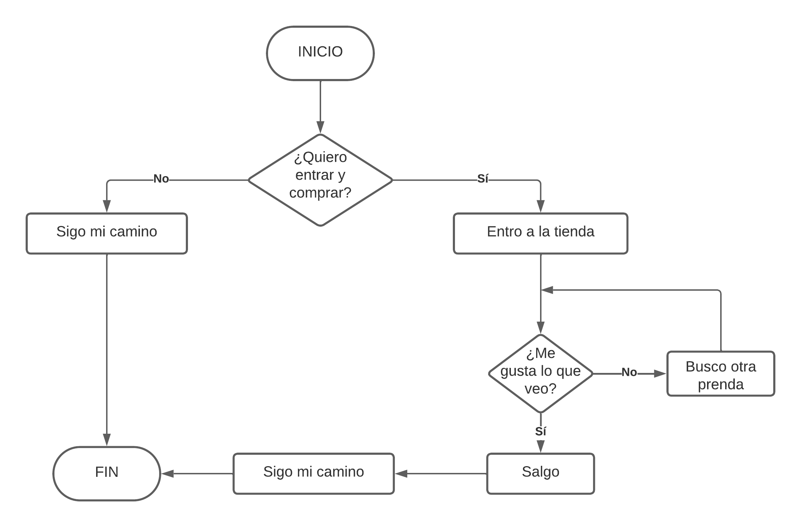

Diagrama de flujo
Anteriormente hemos visto que los algoritmos secuenciales y condicionales pueden ser representados a través de un diagrama de flujo.
De este mismo modo, los algoritmos cíclicos pueden encontrarse en diagramas de flujo, en especial los que conllevan el ciclo que hemos estado viendo a lo largo de este curso.
Ahora, estás viendo un diagrama de flujo del algoritmo que vimos anteriormente en el vídeo.
Diagrama de flujo cíclico

Es fácil observar que lo diagramas de flujo cíclicos tienen las mismas estructuras que los algoritmos secuenciales/condicionales.
Características
- El ciclo se escribe dentro de la misma figura geométrica que las condicionales (rombo)
- Luego de la condición del ciclo, se tienen dos opciones: Se cumple la condición o No se cumple la condición.
- Si se cumple la condición se realizan los pasos descritos por el ciclo y se regresa a la condición que este nos pone
- Si no se cumple la condición salimos del ciclo.
- Cuando termina de realizarse el ciclo, continuamos con el algoritmo del mismo modo en que se haría con uno secuencial/condicional.